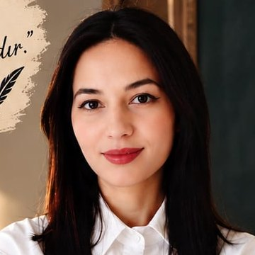
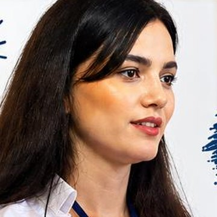
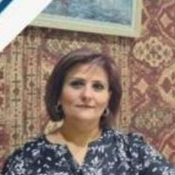
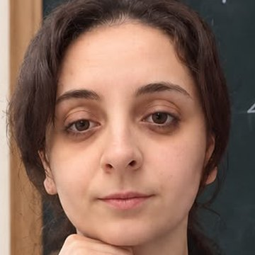
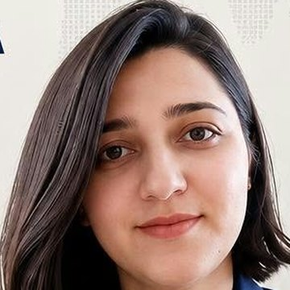
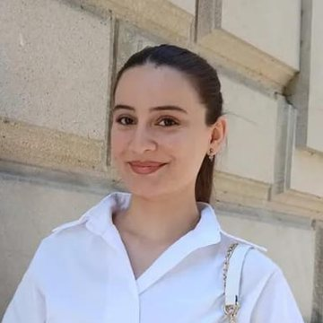
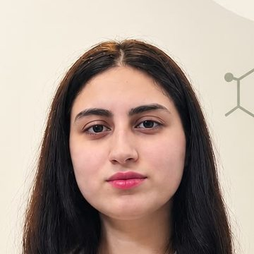

Azərbaycan dili və ədəbiyyatMikayılova Türkanə
“Dilin varlığı, millətin varlığıdır.”
- Dilin gözəlliyi düşüncənin aynasıdır
- Oxu, düşün, yaz, danış, inkişaf et
- Hər şagird xüsusi bir dəyərdir
Hər müəllim öz fənni üzrə təcrübəli və şagirdlə ortaq dil tapan mütəxəssisdir. Nümunə dərsə qoşulun, müəllimi özünüz seçin.

Azərbaycan dili və ədəbiyyat“Dilin varlığı, millətin varlığıdır.”

Azərbaycan dili və ədəbiyyat“Daha güclü nəsillər üçün.”
“Hər bir uğur kiçik addımlarla başlayır.”
“Məntiqi düşün, riyaziyyatı sev!”
“Better English, Brighter Future.”

İngilis dili“İllərin təcrübəsi, güvənli nəticə.”
“Kimyanı asan başa düşək!”

Fizika“Fizikanı anlamaq çətin deyil!”

Coğrafiya“Coğrafiyanı öyrən, gələcəyini planlaşdır!”
“Yüzlərlə uğurlu nəticə!”
“Daha yaxşısı sən üçün!”
“Peşəkar yanaşma, real nəticə!”
“İngilis dilində daha rahat danış!”

Riyaziyyat“Riyaziyyat sənin gələcəyinə açar!”
“Bilik · İnkişaf · Gələcək”

Kimya · Biologiya“Elm gələcəyindir.”
Yazın, şagirdin sinfinə və fənninə uyğun müəllimi birlikdə seçək.